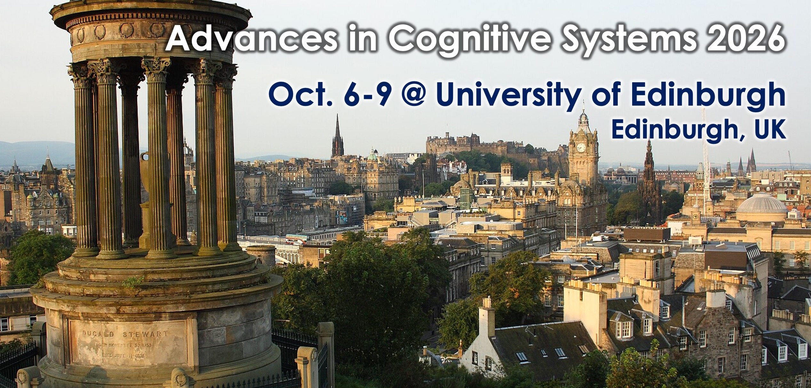

The Thirteenth Annual Conference on Advances in Cognitive Systems will take place from Tuesday, October 6, to Friday, October 9, 2026, at the Informatics Forum at the University of Edinburgh .
The conference aims to bring together researchers to advance the original goals of artificial intelligence: to explain cognition and learning in computational terms and to reproduce a broad range of intelligent behaviors and human abilities in computational artifacts.
The conference welcomes many types of research, including demonstrations of new capabilities, empirical studies of implemented systems, and formal analyses of complex tasks. The term "cognitive" refers to any computational artifact that thinks or reasons, whether or not it works the same way as humans. Topics of interest include:
|
We encourage participation from anyone who is interested in computational approaches to complex cognition, human-level intelligence, and related topics.
We invite researchers to submit papers for presentation at the conference via OpenReview. The submission site will be active soon.
Papers should have no more than sixteen (16) single-column pages and must follow the formatting instructions. Appendices will not count toward the 16-page limit. The meeting will consider two types of paper submissions.
We also invite proposals for workshops or tutorials to be held on the first day of the conference. These events support focused community discussion and knowledge exchange. Submitted proposals will be reviewed by the program chairs.
| Important Dates | |
| — Workshop Proposals Due | June 2, 2026 |
| — Workshop Notifications Sent to Authors | June 16, 2026 |
| — Paper Abstracts Due | June 23, 2026 |
| — Paper Submissions Due | June 30, 2026 |
| — Paper Reviews Submitted | July 28, 2026 |
| — Paper Notifications Sent to Authors | August 4, 2026 |
| — Conference Schedule Released | August 18, 2026 |
| — Camera Ready Papers Due | September 22, 2026 |
| — Conference | October 6-9, 2026 |
| The time zone for each deadline is 11:59 pm Anywhere on Earth (UTC-12:00) |
The Thirteenth Annual Conference on Advances in Cognitive Systems will run from Tuesday, October 6, to Friday, October 9, 2026 at the Informatics Forum at the University of Edinburgh in Edinburgh, UK. The meeting will include extended technical presentations, leisurely breaks to encourage discussions, and poster receptions to foster additional interactions among participants.
The schedule for conference and workshops will be available shortly after paper decisions have been made. Information about registration, transportation, and lodging will be posted soon.